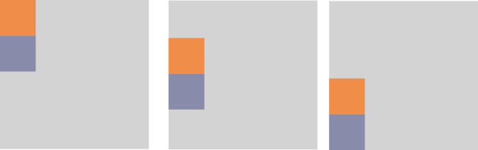
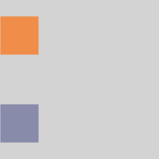
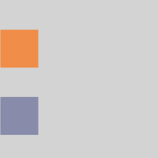
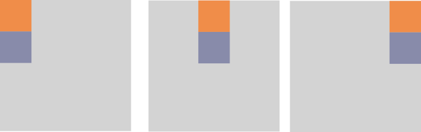
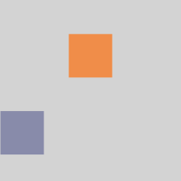

Jetpack Compose: Columns
3rd April 2022
Columns are one of the fundamental building blocks of compose. Think of them like a linear layout with vertical arrangement. Lets take a look at what makes a column:
@Composable
inline fun Column(
modifier: Modifier = Modifier,
verticalArrangement: Arrangement.Vertical = Arrangement.Top,
horizontalAlignment: Alignment.Horizontal = Alignment.Start,
content: @Composable ColumnScope.() -> Unit )
As columns are often used as a container for other content, we have access to a vertical arrangement and horizontal alignment properties which we can set.
There is also ColumnScope which gives the column's children access to some more values which can be used to influence their layout and display.
Vertical arrangement
Top, Center, Bottom
These values are pretty self-explanatory. They will stick the children vertically to the top center or bottom of the column
Column(verticalArrangement = Arrangement.Top) {
Text(...)
Text(...)
}
Column(verticalArrangement = Arrangement.Center) {
Text(...)
Text(...)
}
Column(verticalArrangement = Arrangement.Bottom) {
Text(...)
Text(...)
}

Space between
Space between will evenly distribute the children throughout the column without adding any additional spacing before the first of after the last child
Column(verticalArrangement = Arrangement.SpaceBetween) {
Text(...)
Text(...)
}
Space around
Shamelessly taken from the docs: Place children such that they are spaced evenly across the main axis, including free space before the first child and after the last child, but half the amount of space existing otherwise between two consecutive children. Visually: #1##2##3# for LTR and #3##2##1# for RTL
Column(verticalArrangement = Arrangement.SpaceAround) {
Text(...)
Text(...)
}

Space evenly
Place children such that they are spaced evenly across the main axis, including free space before the first child and after the last child. Visually: #1#2#3# for LTR and #3#2#1# for RTL
Column(verticalArrangement = Arrangement.SpaceEvenly) {
Text(...)
Text(...)
}

Horizontal alignment
Top, Center, Bottom
Again these values are pretty self-explanatory. They will stick the children horizontally to the start, center or end of the column
Column(horizontalAlignment = Alignment.Start) {
Text(...)
Text(...)
}
Column(horizontalAlignment = Alignment.CenterHorizontally) {
Text(...)
Text(...)
}
Column(horizontalAlignment = Alignment.End) {
Text(...)
Text(...)
}

ColumnScope
Any composable created within our Column has access to its ColumnScope. This gives access to some useful modifiers that the children can make use of.
Align
The align modifier takes in an Alignment as seen above in the Horizontal examples. If a child has this set through a modifier it overrides any that is set on the parent. Allowing for a staggered set of views for example.
Column(verticalArrangement = Arrangement.SpaceEvenly) {
Text(modifier = Modifier.align(Alignment.CenterHorizontally))
Text(...)
}
fun Modifier.align(alignment: Alignment.Horizontal): Modifier

Weight
The weight modifier works much the same way as it does in HTML. It allows you to say that certain composables should take up greater portions of the screen than others. For example of you have 2 Views - The first has a weight of 2 and the second has a weight of 1, the first View will take up 2/3 of the screen and leave 1/3 to the second view. The fill property allows us to say that if a composable should take up 2/3 but its content only currently fills 1/3 then we will only draw it as 1/3 but the remaining space can't be taken by our other views.
Column(...) {
Text(modifier = Modifier.weight(2f))
Text(modifier = Modifier.weight(1f))
Text(modifier = Modifier.weight(1f))
}
Column(...) {
Text(modifier = Modifier.weight(2f,fill = false))
Text(modifier = Modifier.weight(1f))
Text(modifier = Modifier.weight(1f))
}